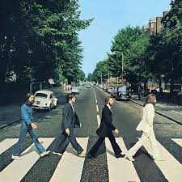

My Favourites
Football Club
Arsenal
Band
The Beatles

Song
Layla
Album
Abbey Road

Teacher
Suvam Sir
Hi, I'm
Mayel Tamang
Music taught me the importance of practice and hard work, as well as the freedom of expression and creativity. I perform monthly for my church's youth music band. I also have a 2-year "foundation in music" degree in classical guitar from Kathmandu Jazz Conservatory. Able to play rhythm, bass and lead guitar.
I became the person that I am in school, and fostered most of my interest for maths, music, football and learning. I also taught for about a month as a volunteer, and learnt a lot of valuable skills teaching grades 4 to 9.
In the student council, I developed leadership skills, and learnt how to be an impartial, diplomatic leader.
My Achievements
Represented the Arab Republic of Egypt and achieved an honourable mention.
Led student council as president for 3 years.
Captained school football team as goalkeeper to one trophy and one semi-final finish.
Achieved a 3.80 GPA in SEE 2082
My Favourites
Football Club
Arsenal
Band
The Beatles
Song
Layla
Album
Abbey Road

Teacher
Suvam Sir